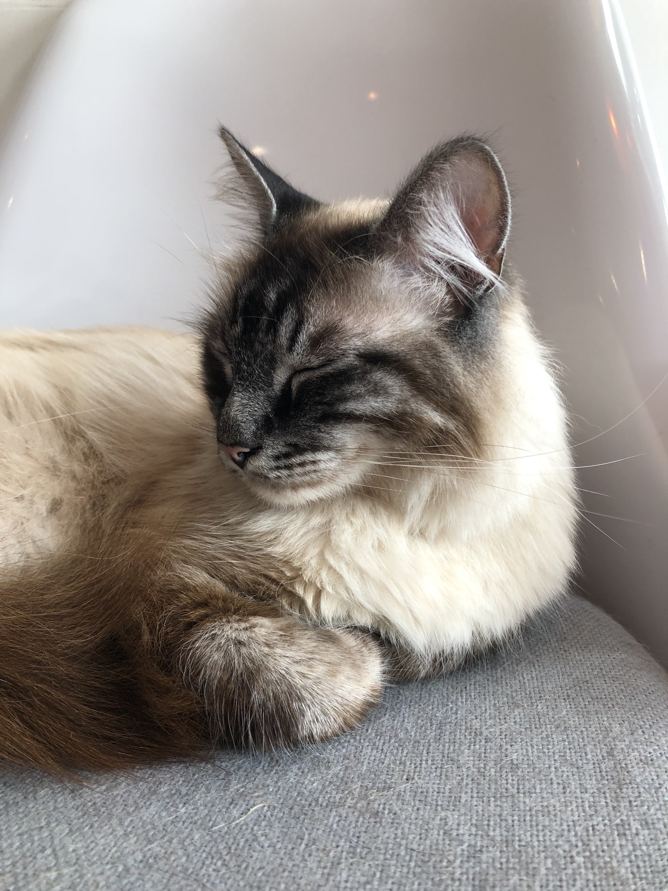

- 
-
---- ABOUT ----
Greetings! I'm Tsz Ting. I was born and raised in Hong Kong and now based in the Bay Area. I am focused, determined, and a workaholic. My day job is going to kindergarten. When I am done with school, I love helping (read: interfering) my parents' work.
As you can see, I LOVE computer. I can stay in front of it all day long without ever getting bored. Therefore, I decided to pursue a path in Computer Science. The future me is a college student at San Jose State University majoring CS, and she is a Computer Scientist | Designer | Photographer.
If you would like to know more about me, feel free to say hello to the future me. Alright, I gotta go back to work now. Peace!
email: 123@gmail.com